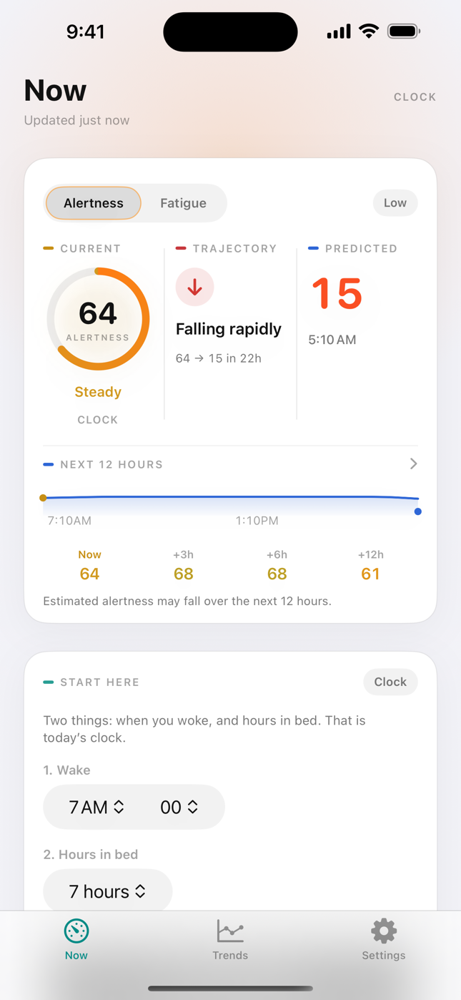

Live mark
Not a sleep log.
Now, likely, and where fatigue is heading. One mark you can glance — current, trajectory, and the next twelve hours.
Personal advisory
Fatigue intelligence, in real time.
Now, likely, and where it is heading — not a sleep log.

What sets Fatigo apart
Fatigo is a live alertness gauge — not a sleep diary, not a medical device, and not a go / no-go light. The score stays on this iPhone.
Live mark
Now, likely, and where fatigue is heading. One mark you can glance — current, trajectory, and the next twelve hours.
Advisory
Advisory only. Fatigo does not tell you to work, drive, or rest. It does not know when you are unsafe. The call is yours.
On-device
Scoring is on-device. No account for the core loop. Health is read-only. Export or delete logs in Settings. Nothing sold for ads.
Plus
Free is a clock. Plus puts Watch heart — HRV and resting HR — in the same mark, every day you wear it.
In the app
The daily habit is the number. Everything else supports that.
Current alertness, how fast it is moving, and a predicted low — from last night, time awake, and the body clock.
A trajectory you can scan. Coffee and naps you enter show up here. Not a history of how you slept.
Two fields: when you woke, hours in bed. Skip it when Plus already has last night from the Watch.
Plus reads HRV and resting heart rate on this iPhone. Last night is automatic when you sleep in the Watch; two fields if it was charging.
Plus ride-alongs: the live mark on a trip, and through a night block — pause places, a sleep window, logs. See Drive and Shift. Advisory. You decide.
The mark on Apple Watch and the Lock Screen. Glance, then you decide.
Plus ride-alongs
Two ways the live mark stays with you. Drive is a trip. Shift is a block of work — especially nights. Same advisory number. Not HOS. Not a dispatcher. You decide when to stop, work, or rest.
Drive
Start a trip from Now or Watch. The live number comes with you — current, trajectory, and the next twelve hours. A destination is optional. Pause places are estimates. Fatigo does not tell you to pull over.
Why it helps The number is in the car with you, not buried in Now. You see how the trip sits against time awake and the body clock — then you decide the next pause.
Shift
Put a work block on the calendar. Now and the next twelve hours stay in view through it. Fatigo can sketch a sleep window around a shift you already know. Not hours-of-service. Not a medical device.
Why it helps A night is easier to judge when the block, the mark, and a sleep window sit together. You see the stretch coming — then you decide when to rest.
Clock vs Plus
The free habit is real. Plus puts Watch heart in the same number — and unlocks Drive and Shift.
| In this number | Clock | Plus |
|---|---|---|
| What it is | Typical wake and time of day | Watch heart — HRV and resting HR |
| Last night | You enter wake and hours in bed | From the Watch when you sleep in it; two fields if it was charging |
| Sharp | Off | On — from your body, not the clock |
| History | 7-day chart | 30 and 90-day history |
| Drive | Locked | Start or plan a trip, pause places, log, Watch and Lock Screen |
| Shift | Locked | Plan a block, sleep window, Nights occupation, shift log |
| Wrist and Lock Screen | — | Watch complication and Lock Screen |
| Price | Free forever | 7 days free, then yearly. Cancel anytime. |
The same screens you will see in the app.
Fatigo Plus
Free: you enter last night each morning. Coffee and naps when they happen. Sharp stays off.
Plus: Watch HRV and resting heart rate in the number every day you wear it. Last night from the Watch when you sleep in it — two fields if it was charging. Drive, Shift, Lock Screen, longer history. Seven days free, then yearly. Cancel anytime in iPhone Settings.
See your Watch heart in the live estimate.
Updated with HRV + resting heart rate.
Then $19.99/year
Cancel anytime in iPhone Settings.
Advisory only. You decide.
Not a medical device.
Fatigo is a wellness and informational tool. Scores are estimates. It is not a medical device. It does not know when you are unsafe. You decide.
What we read, what stays on the iPhone, and how you export or delete logs. Privacy Policy
How the app is licensed, what Plus means at checkout, and what Fatigo is not. Terms of Use
Questions about the app, Health, or Plus. Support